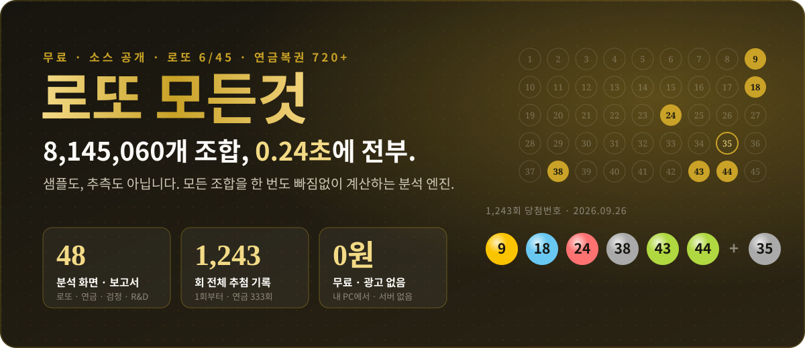
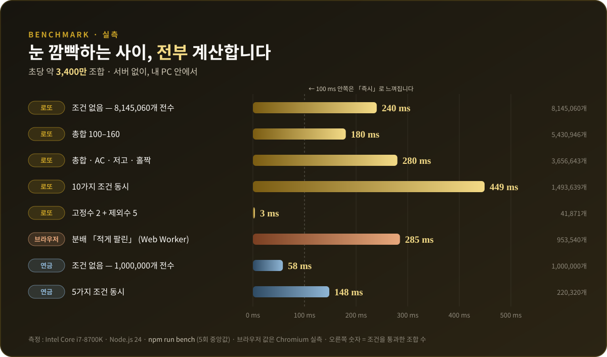
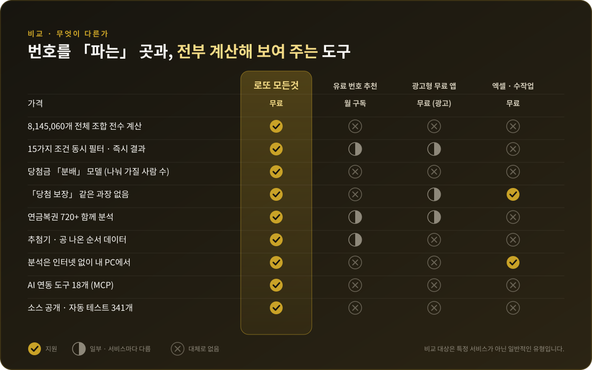
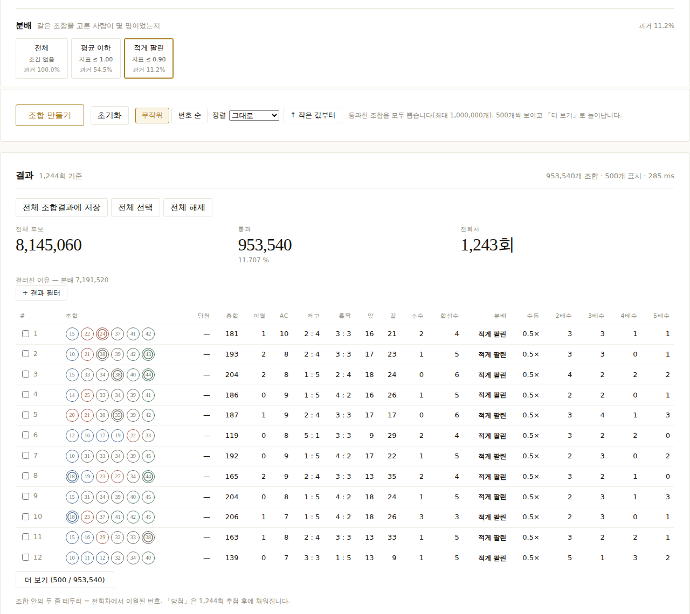
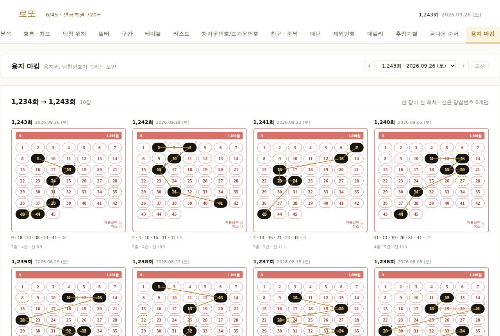
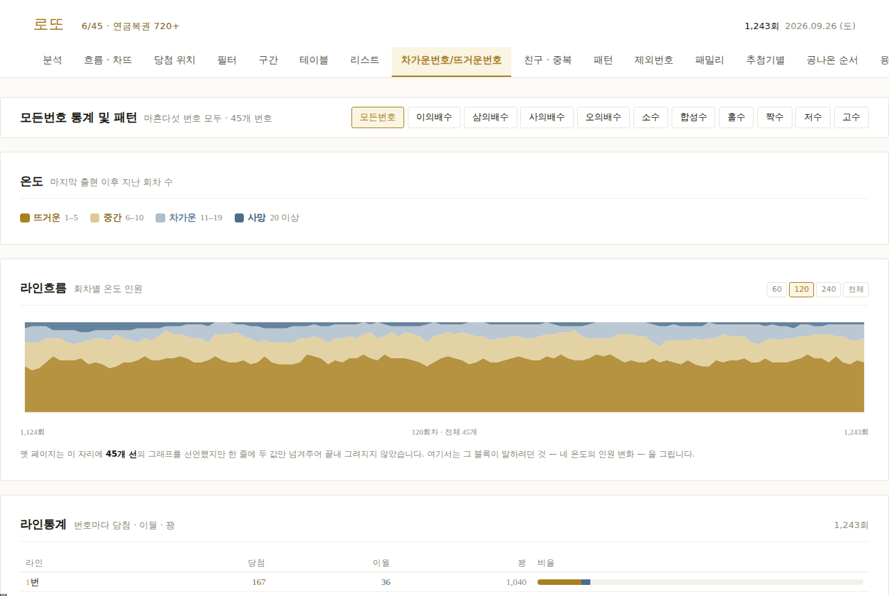
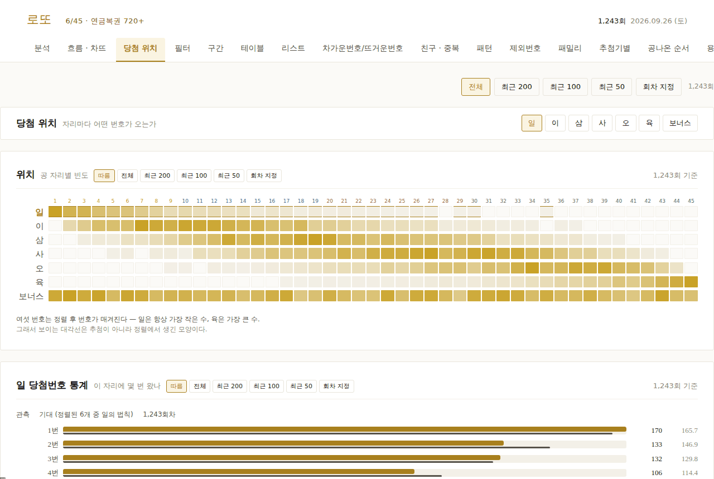
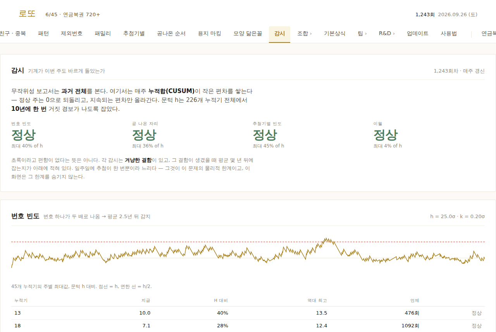
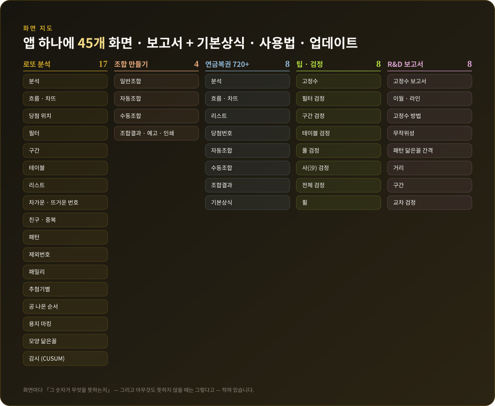

무료 로또 분석 프로그램 — 로또 6/45 · 연금복권 720+ 번호 조합기
압축 풀고 설치하기.bat 두 번 클릭 · 광고 없음 · 회원가입 없음 · 구독 없음
번호를 파는 곳과, 전부 계산해 보여 주는 도구
「추천 번호」 뒤에 무엇이 있는지 보여 주지 않는 서비스 대신, 모든 조합을 직접 계산하고 그 근거까지 화면에 적어 두었습니다.
8,145,060개 전수 계산
샘플링 없이 로또의 모든 조합을 훑습니다. 조건 10개를 동시에 걸어도 0.45초.
나눠 가질 사람 수
1,238회 실제 1등 당첨자 데이터로 만든 모델. 남들이 덜 고르는 조합을 골라냅니다.
조건 · 결과 필터
총합, AC값, 홀짝, 저고, 구간, 배수, 이월, 고정수, 제외수… 전체 조합에 즉시 적용.
연금복권까지
5,000,000장 전부를 0.06초에. 자리별 숫자, 반복 숫자, 전회차 대비.
분석 화면 · 보고서
흐름·차뜨, 당첨 위치, 친구·중복, 추첨기별, 공 나온 순서, 용지 마킹, CUSUM 감시.
내 PC에서, 무료로
분석은 인터넷 없이 내 컴퓨터 안에서. 계정도, 수집되는 개인정보도 없습니다.
눈 깜빡하는 사이, 전부 계산합니다
실측값입니다. 프로그램에 들어 있는 npm run bench 로 여러분의 PC에서 직접 확인할 수 있습니다.

무엇이 다른가
특정 서비스가 아니라 흔히 볼 수 있는 유형과 비교했습니다.

실제 화면






원클릭 설치 — 필요한 것 : 없음
프로그램을 따로 설치할 필요가 없습니다. 인터넷 연결만 있으면 설치 파일이 전부 알아서 합니다.
- 다운로드 — lotto-modeungeot.zip (약 1.5MB)
- 압축 풀기 — ZIP 파일 우클릭 → 압축 풀기
- 설치하기.bat 두 번 클릭 — Node.js가 없으면 자동 설치(처음 한 번, 1~3분), 패키지 · 데이터 · 바탕화면 아이콘까지 만든 뒤 앱이 바로 열립니다.
처음 한 번 Windows 보안 경고가 뜨면 「실행」(또는 「추가 정보 → 실행」)을 누르세요. 인터넷에서 받은 설치 파일에 붙는 기본 경고입니다.
자주 묻는 질문
정말 무료인가요?
개인적인 사용은 네, 완전히 무료입니다 — 가격 · 구독 · 광고 · 회원가입이 없습니다. 비영리 단체 · 학교 · 공공기관도 무료입니다. 회사 업무나 상업 서비스에 쓰려면 유료 라이선스가 필요합니다(문의 dooga1090@gmail.com). 소스 코드는 GitHub에 공개되어 있습니다.
이 프로그램을 쓰면 당첨 확률이 올라가나요?
아니요. 어떤 조건도 1등 확률(1/8,145,060)을 바꾸지 못합니다. 대신 당첨됐을 때 1등을 나눠 가질 사람 수가 적은 조합을 고르도록 돕습니다 — 그것이 「분배 모델」입니다.
설치가 어렵나요?
ZIP을 받아 압축을 풀고 설치하기.bat을 두 번 누르면 끝입니다. Node.js가 없으면 자동으로 설치하고, 끝나면 앱이 바로 열립니다.
맥이나 리눅스에서도 되나요?
원클릭 설치는 윈도우용입니다. 맥과 리눅스에서는 Node.js 22.5 이상을 설치한 뒤 GitHub의 개발자용 명령어로 실행할 수 있습니다.
새 회차 당첨번호는 어떻게 반영되나요?
앱의 「업데이트」 탭에서 버튼 하나로 동행복권 공개 결과를 가져옵니다.
우리의 약속 — 과장하지 않습니다
「당첨 보장」, 「적중률 ○○%」 같은 문구는 없습니다. 화면마다 그 숫자가 무엇을 뜻하는지, 그리고 아무것도 뜻하지 않을 때는 그렇다고 적어 두었습니다. 흔히 도는 규칙들은 과거 전체 데이터로 직접 검정해서 보여 줍니다.